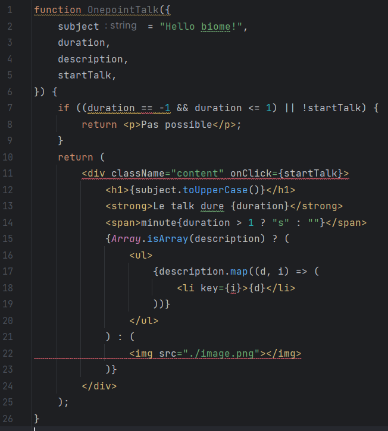
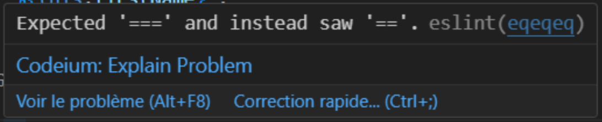
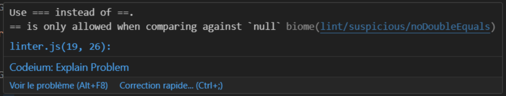

Formatage et analyse de code
// JavaScript
const cafe = {
nom:'café long',
typePreparation : 'dosette' ,
taille : 'court' ,
autre : {
description : "On le prépare en servant un double expresso sur de l'eau chaude" ,
prix : 1.5 , devise:'$'} ,
} ;
const boissonsChaudes = [ {
nom:'cappuccino',
typePreparation : 'machine' ,
taille : 'court' ,
autre : {
description: "Cette boisson est composée à 1/3 de café expresso." , prix : 3 , devise:'$'} , } ,
cafe
];
// JavaScript
const cafe = {
nom: 'café long',
typePreparation: 'dosette',
taille: 'court',
autre: {
description:
"On le prépare en servant un double expresso sur de l'eau chaude",
prix: 1.5,
devise: '$',
},
};
const boissonsChaudes = [
{
nom: 'cappuccino',
typePreparation: 'machine',
taille: 'court',
autre: {
description: 'Cette boisson est composée à 1/3 de café expresso.',
prix: 3,
devise: '$',
},
},
cafe,
];
Analyse statique / Linter

Les outils


Rapide
J'ai test
// JavaScript
const { exec } = require('child_process');
function os_func() {
this.execCommand = (cmd, callback) => {
console.log('Start test');
console.time('Timer');
exec(cmd, (error, stdout, stderr) => {
if (error) {
console.error(`exec error: ${error}`);
console.timeLog('Timer');
return;
}
callback(stdout);
});
};
}
const os = new os_func();
os.execCommand('npx prettier . --write --log-level=silent', returnvalue => {
// os.execCommand('npx @biomejs/biome format . --write --log-level=none', returnvalue => {
console.timeLog('Timer');
});
Projet actuel


NodeJS
| Type | Biome | Prettier |
|---|---|---|
| Fichiers modifiés | 11_139 | 13_929 |
| Insertions(+) | 859_784 | 1_542_560 |
| Suppressions(-) | 475_103 | 827_217 |
Analyse static
 Feuille de route 2024


Conclusion
Nouvelle version v1.6 sortie le 8 mars 2024